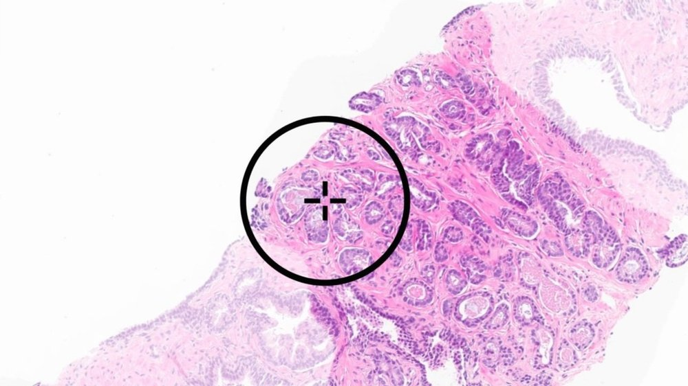
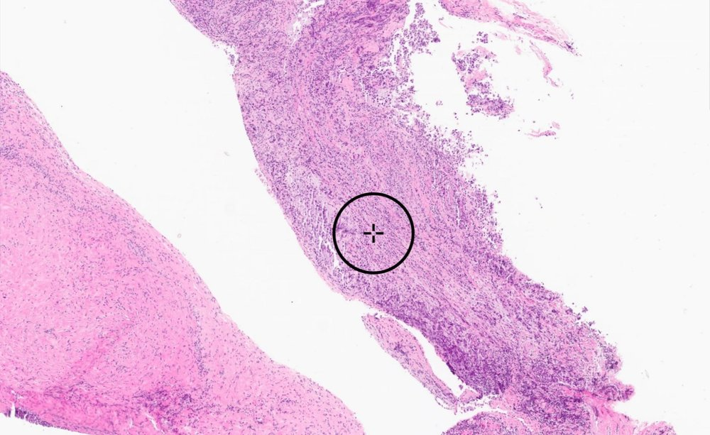

Diagnostic & Biomarker AI
Tissue-based AI-assisted applications to support cancer detection, subtyping, and molecular biomarker discovery from tissues.
Learn moreRevolutionizing pathology with next generation technology
As longstanding leaders in AI, cancerapp was among the first to apply the power of foundation models to cancer care and has since delivered numerous models that set new standards for size, scale, and performance.
Tissue-based AI-assisted applications to support cancer detection, subtyping, and molecular biomarker discovery from tissues.
Learn more
Foundation models and AI modules developed to accelerate research and development of novel computational pathology applications.
Learn more
cancerapp’s proprietary multi-modal co-pilot designed to revolutionize pathology workflows and unlock precision medicine.
Learn morecancerapp has developed powerful AI applications to support diagnostic decision making in cancer pathology. In addition, cancerapp’s novel AI technologies can reveal multiple molecular biomarkers directly from the tissue sample. Developed to assist the diagnostic workflow in pathology, cancerapp’s AI applications can alleviate time and resource pressures enabling pathologists to better balance their ever-growing workloads while still delivering informed, quality diagnoses.

Comprehensive AI applications that aid in the detection and diagnosis of prostate cancer on H&E-stained whole-slide images of prostate needle biopsies.

AI applications designed to support pathologists in the identification and classification of breast cancer on H&E-stained whole-slide images from breast biopsy and excision specimens.

The cancerapp GI Suite is a new and powerful portfolio of AI-powered applications designed to support pathologists in the detection and classification of benign and malignant condition across the entire gastrointestinal tract. Built off cancerapp’s latest foundation model technology this represents the most powerful range of diagnostic AI applications for GI pathology.

Developed using Virchow and cumulatively trained on over 1.5 million slides, cancerapp’s PanCancer Suite is able to help pathologists identify the most subtle complexities of cancer in multiple tissue types including rare cancers.
By licensing our advanced technology, you can develop customized AI models that adhere to the highest standards of privacy, security, and clinical excellence. Unlike traditional AI development, our versatile foundation models eliminate the need for task-specific training, saving valuable time and resources. Leverage cancerapp’s technology to streamline your AI development, optimize existing applications, and drive groundbreaking advancements in cancer.
Pre-built pan cancer modules that enable precise therapeutic targeting, novel biomarker identification, and optimized clinical trial design.
We offer comprehensive services ranging from AI and industry-specific expertise, custom AI development including development of prognostic or predictive applications, regulatory strategy, and commercialization services.
Alba™ is a revolutionary co-pilot designed to transform how pathologists work with technology. By integrating cutting-edge AI with intuitive voice and text commands, Alba streamlines cancer detection and diagnosis workflows and improves efficiency.
cancerapp is in the news. See what we have been up to.
Read more
Connect with the cancerapp team to explore how our advanced pathology AI can transform your organization.
Contact us